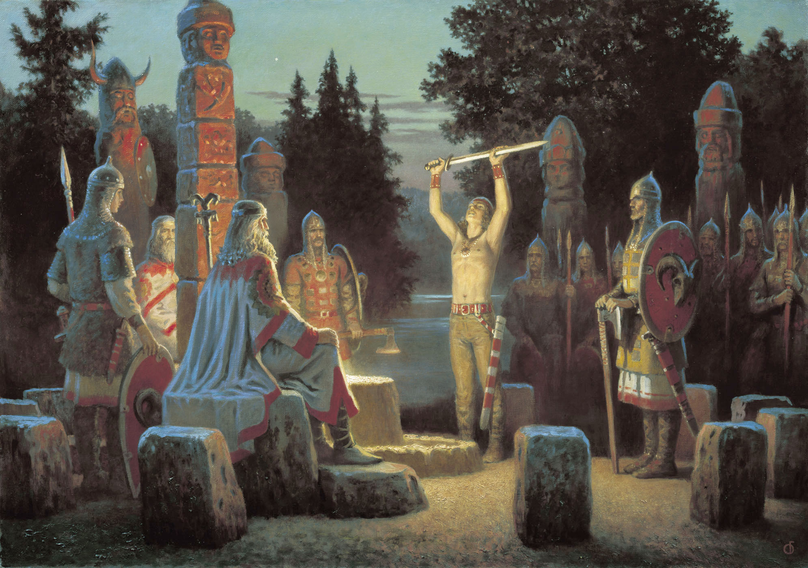

Остров РУЯН
Остров Руян лежит против датского побережья и занимает площадь почти в 1000 кв. км; все его берега изрезаны глубокими и укромными заливами и бухточками, а некоторые топонимы Божий Камень или Святая Гора - удивительным образом напоминают о мифическом камне - Алатырь.
По свидетельству древнего историка Геpаpда Меpкатоpа «Космогpафия»: "На острове том живали люди-идолопоклонники - раны или рутены (руги, руяне), именуемые люты, жестоки в бою, таковы вельможны, сильны, храбрые воины бывали, против христиан воевали жестоко, за идолов своих стояли, и всем окрестным госyдаpствам грозны и противны были. Язык у них был словенский да вандальский. Грамотного учения не искали, но и заповедь между собой учинили, чтобы и грамоте, а не только воинским делам прилежные охотники были".
Население острова Руяна "все Поморье славянское облагало данью, а сами никому дани не платили, они", по словам Гельмольда, "пренебрегая всеми выгодами хлебопашества, всегда были готовы и к морским походам, надеясь на свои корабли, как на единственное средство к обогащению". Аркона славилась далеко за пределами земли руян. Ей подчинялись окрестные племена, а знаменитому арконскому храму преподносили дары властелины соседних княжеств и королевств. Слава Арконы являлась одним из самых ярких показателей расцвета славянской культуры того времени.
По мнению Гельмольда, правитель Руяна единственный из всех славянских правителей носит титул короля. Вспомним, что королем с первых же дней западные авторы величают правителя русов. Немецкие документы называют "королями" только двух славянских правителей — владыку Восточноевропейской державы и правителя маленького островка у побережья Балтики. Напомним - правители Польши и Чехии для них всего лишь "князья"! По сообщениям Ибн Русте и Гардизи глава русов носит титул "хакан-рус". Хакан - титул императорский! Более того, на востоке этим словом обозначали царя-жреца, священного владыку. А Гильфердинг, комментируя описание Гельмольдом и другими немецкими авторами, и говорит о священном характере его власти.
До какой степени доходило почтение славян к правителю священного острова, показывает Саксон Грамматик. Он поведал о случае, происшедшем во время одного из набегов ругов-русинов на соседей. Князь ругов, Яромир, напал на двоих воинов другого племени. Сразил одного, но копье застряло в теле. Тут подскочил другой, замахнулся, и вдруг узнал правителя ругов. Вражеский воин бросил оружие и рухнул ниц.
Вот он, священный "хакан-рус"!
Все арабы отмечают поражавшее даже их, людей Востока, гостеприимство русов, обитателей острова. И северогерманский автор хроники II в. Адам Бременский с уважением пишет о русо-славянах, непосредственных соседях германских племен: «Несмотря на бесконечные войны (балтийских славян) варягов с германцами и упорное нежелание первых отрекаться от древних обычаев и принимать «истинную веру», последние всё равно восхищались мужеством, прямотой и честью язычников. Гельмольд в своих «Славянских хрониках» пишет: «Хотя ненависть к христианству и жар заблуждений были у руян сильнее, чем у других славян, однако они обладали и многими природными добрыми качествами. Люди эти чрезвычайно гостеприимны и более всего почитают своих родителей. Среди них никогда не встретишь человека, оставленного в беде или нищете. Если кто-то заболел или ослаб из-за старости, то его берут на попечение. Гостеприимство и забота о престарелых людях считаются у славян первыми добродетелями», а относительно руян он добавляет: «Руяне - очень храброе русо-славянское племя, без решения которого, сообразно с законом, не предпринимаются никакие общественные постановления. Их боятся, поскольку они находятся в тесных сношениях с богами, или скорее демонами, которым они воздают больше почитания, чем остальным».
И на самом деле, у русов, хранимых силу и знания Светлых Богов, есть главная заповедь: «Чтить родителей своих и Предков, а Предки суть Боги Наши, а мы Их дети».
Арконский храм был центром самого города и всей городской жизни. Он был самым высоким строением в городе, перед ним находилась большая площадь, на которой собиралось вече – народное собрание. Посвящён он был солнечному божеству варяжских русов и славян - Световиту.
Хотя само имя Бога и говорит о том, что он является покровителем солнца и света, такое восприятие передаёт представления древних славян лишь поверхностно. Световит равно почитался покровителем жизни и войны, в храме изображались его символы – меч и рог изобилия. Для славян-солцепоклонников Светило являлось олицетворением самой жизни, и они вдохнули в великий образ ведического видения мира, коим был солнечный Световит, все возможные её проявления, выражавшиеся и в изобилии, приносимом трудом, и в ярости воинов. Световита также почитали как олицетворение высшей мудрости, его почтительно именовали Дедом. Световит – это воплощение жизни, Природы, которая окружала славян и частью которой они себя осознавали. Храм Световита был символом Арконы. В нём находилось свещенное воинское знамя руян – Станица – которое несли впереди войска перед сражением В самом храме жил огромный орёл, считавшийся, наряду со знаменем, символом Световита и варяжских русо-славянов. Изображение орла было одним из основных символов руян, оно находились как в храме, так и на стягах, щитах, ладьях многом другом.
На протяжении последних веков Руян, ставший Рюгеном, попеременно принадлежал датским, шведским и немецким князьям. На мысе Аркона отчетливо видны остатки гигантских земляных укреплений - древней крепости балтийских славян.
Норманнскую теорию многие знают как «призвание варягов». Призвание варягов действительно имело место, но кто же такие варяги? Современная историческая наука с уверенностью может сказать, что варягами восточные славяне называли всех выходцев с Балтийского (Варяжского) побережья. А оно отнюдь не всегда принадлежало по преимуществу германцам. Вплоть до XI-XII веков все южные и восточные берега Варяжского моря (Балтики) были заселены славянами-венедами – бодричами (ободритами) и лютичами. Именно их в основном и называли варягами. Из этих русо-славянских племён происходил и Рюрик, основатель первой русской правящей династии. Из них происходили, и великие военные вожди того времени: Одоакр, низложивший последнего римского императора, и Вещий Олег, покоритель «второго Рима» – Царьграда.
Итак, остров Рус, Руян, Буян, Рюген, главная святыня русов и славян. Именно к его обитателям из кровавого безвременья усобиц взывали ильменские словене. Защищаясь от нечисти, их потомки и спустя тысячу лет обращались к силам, обитающим на священном острове. Именно оттуда откликнулись на их призыв варяги-русы. Именно благодаря им, благодаря русичам: Рюрику, Вещему Олегу, Святославу - родоначальникам государей, укреплявших и хранивших державу Сынов Сокола и семь веков правивших ею, сама Русь возродилась в очередной раз!
Варяги славились по всей тогдашней Европе как отважные воины и искусные мореплаватели. По сути, само слово «варяги» обозначало не какой-либо народ, а людей, ведущих образ жизни воинственных мореходов. Когда воинственные варяги шли в бой на врага, то боевым кличем их было: «Вар! Вар!», что означало «в землю!» загнать врага, отсюда пошло и слово «варвары». Постоянно они ходили в походы на соседей, а с началом агрессивной экспансии германцев-крестоносцев на восток стали вести с ними практически непрерывные войны.
Исследователь балтийских славян А. Гильфердинг приводит свидетельства датского миссионера XII века Гельмольда и других современников о том, что варяги, «передовые бойцы на суше против немцев, были первыми удальцами и на море. Они сами собой приучились к морской жизни, так что современники называли их страну морской областью славян. С другой стороны, их положение впереди всех славянских народов, среди врагов, саксов и датчан, отнимало возможность мирного, торгового судоходства. Таким образом, главным занятием сделалась война на море с датчанами, как на суше с немцами, а главным их промыслом – морские разбои».
Вот уж, сколько лет главным героем спора о происхождении Руси является князь Рюрик, о котором в «Повести временных лет» сказано, что он был варягом, призванным в 862 году вместе с братьями на княжение в Новгород из-за моря. Русские же учёные считали: Русь не могла получить государственность из рук германцев, а германские историки стояли на своём: Русь как государство образованна их соотечественниками. В подтверждении того, что князь Рюрик был из роду Русичей, можно уже не мало найти тому летописных доказательств. А между тем это имя было широко известно, в том числе и в раннем средневековье, на Балтике. Историк Сергей Переверзенцев в книге «Руги» пишет:
«…само слово «Русь» не славянское. И те древние русы, знаменитые братья Рюрик, Синеус и Трувор, которые в IX веке встали во главе славянских племён, не были славянами. Более того, выяснилось, что на карте древней Европы имя «Русь» встречается в самых разных местах. Например, четыре разных Руси были в Прибалтике. В Восточной Европе имя «Русь» можно найти не только на берегах Днепра, но и в Карпатских горах, и в устье Дуная, и на побережье Азовского и Каспийского морей, и в Крыму, и в Западной Европе, на территории современной Австрии, а ещё в Тюрингии и Саксонии».
Сегодня уже много различных летописных, исторических и современных источников вправе заявить об огромных территориях Руси!
Действительно, древние русы, жили на огромных просторах Евразии. Были они из первых переселенцев Европы, в том числе и на южном и на западном берегах Балтийского моря, где их знали под разными именами – руян, ругов, ободритов, лютечей….
Чешский историк Любор Нидерли как честный историк не мог не видеть, что руяне, или руги, выпадают из славянской общности: и народ этот более древний, и обычаи у него иные. Исторический парадокс заключается в том, что память о древних русских святынях сохранилась благодаря германским хронистам, которые люто ненавидели наших предков, их веру и принимали участие в разрушении наших святынь.
Датский историк Саксон Грамматик (1140-1208) в 9 книгах «Деяния данов» наложил древнейшие саги и исторические события, происходившие в Северной Европе с древности до конца ХII века. Саксон был любопытен и много страниц хроники посвятил описанию быта и нравов наших русских предков. И вновь вернёмся в священный град Световита – средоточие исконной веры руссов и славян, сохранившимся в легендах как остров Буян. Например, вот как описал свои наблюдения древнего ритуала, который славяне называют дожинками. Из наблюдений Саксона:
«На свежескошенном поле волхв читал молитву, обращённую к Матери Сырой Земле, просил у неё прощение за то, что люди ранят её тело сохой, взращивают на ней жито – пшеницу. Благодарил за богатый урожай. Потом жнецы расстилали на земле белую скатерть, выставляли на неё еду, дары земли, и начинали совместную трапезу». Возможно, от этого ритуала и пошла легенда о скатерти-самобранке, ведь ели прямо на Земле-кормилице, которая и на будущий год принесёт такие же дары.
Саксон заключил, что в этих примитивных трапезах и заключается «языческая» вера, которую во имя Христа его соотечественники решили уничтожить. Однако он изменил своё первоначальное мнение, когда оказался на острове Руяне и увидел Аркону. Увиденное поразило датского монаха, что он едва успевал макать перо в походную чернильницу, чтобы описать свои впечатления (см. описание города Арконы в главе «Кап Аркона на Рюгене»).
Итак, реконструкция прошлого базируется в основном на летописных данных. Сами же летописцы были обыкновенными людьми со своим пристрастиями и предпочтениями. Они оставляли хроники, которые должны были прославить их народ в веках. Поэтому события национальной истории ими приукрашивались, а всё чужеземное представлялось как уродливое и агрессивное. Летописи погубленного народа, понятное дело, сохраниться не могли! Они просто сразу уничтожались!
Все в мире помнят о 300 спартанцах, но мало кто не знает, что у нас были свои 300 славянских "витязей"!
Священный город Аркона, являлся в те далекие времена кузницей боевых искусств Европейского Севера. Древняя история полабских славян доносит до нас воспоминание о том, что существовал особый вид воинского служения при храмах. Эти храмовые воины и назывались изначально «витязями».
Явление было уникальным, так как особых войск при храмах у других народов в Европе не существовало. Храмовое войско считалось у полабских славян священным. Оно состояло из посланцев-юношей знатных славянских родов. Причем эти юноши уже на всю жизнь оставались профессиональными воинами. Триста витязей - золотопоясников (движд, дваждырождённых), храмовых воинов Арконы, держали под своим контролем все окрестные племена и народы Балтики. С коих брали дань миром, а с иных мечом собирали.
Как и в Арконе, при храмах других богов, в других племенных центрах, также, содержалось по 300 витязей, «рекрутируемых» из лучших семей полабских племен - ведь это были, по существу, необходимые охранные войска священных градов-крепостей. Поэтому в битвах, например, против германцев впереди полабских войск выступали по 300 витязей на конях, одноцветных с конем божества: например, на белых конях 300 витязей Святовита, на черных – 300 витязей Триглава.

О происхождении слова «витязь»: Слово «витязь» состоит из корня «вит», то есть свет, местоимения «аз,яз» и окончания «ь» (еръ), которое могло оглашаться звуком «е» (еси). Слово в целом расшифровывается «вит я есть» или я есть свет.
Рассмотрим значения слов: Святой и светлый – братья-близнецы: слова, имевшие один смысл. Почитавшие СВЕТ славяне страну свою, данную им в удел, издревле называли СВЕТЛОЙ и ещё РУСЬЮ. Что тоже означает «светлая»: во всех славянских и вообще во всех индоевропейских языках корень РУС связуется с понятием СВЕТЛЫЙ, ОГНЕННО-СВЕТЛЫЙ. Русичи – народ русоволосый – солнечный. Иудохристиане, подделывая свою чужеродную, чужеземную религию под народные представления, присваивали и извращали светлые ведические понятия, вкладывая в них своё, церковное содержание: слова «священный», «свято» – есть искаженное христианами «светлый», то есть солнечный. Так и СВЕТОРУСЬЕ они переиначили в «Святую Русь».
Исходя из этого, солнечного бога-покровителя Арконы именуют Световитом, а не Святовитом. Точно так же князя русичей, победившего хазар, следует называть Светославом, а не Святославом. Подобная древняя форма написания имён не исчезла полностью, она сохранилась у некоторых славянских народов, например, у болгар.
Земли полабских слявян были знамениты храмами ведических богов, которые имелись (помимо Арконы) в Радигоще, Ретре, Корбеле и др. городах. Боги назывались именами с окончанием «вит» («вити» санскр. – свет, весь обитаемый мир). Причем их огромные, вырезанные из дерева куммиры были многоголовыми: Световит, Перевит, Коревит, Яровит. От полабских богов - «витов» - и более ни откуда - произошло слово «витязь». Слово было в употреблении у чехов, наиболее близких этнически к полабским славянам, а «vitezky» означало у них – «победоносный». То есть «витязь» значит «я есть бог» (в смысле как проводник). Считается, что казаки-характерники во время боя напрямую общаются с самим Родом. И, кстати, если вспомнить казаков, их обычай носить усы и чуб (варяги-русы брили головы и бороды почти поголовно, как о том сообщают арабы и византийцы. Их Бог Перун изображался с "серебряными усами", а на миниатюрах Радзивилловской летописи - с воинским чубом на голове), а еще ранее: "Сами славяне, вопреки привычному нам образу "древнего русича" с волосами до плеч и бородою лопатой, коротко стригли, а то и брили волосы и бороды. Знатные воины - лютичи (по Титмару) - могли в знак высокого рода и воинской удали оставлять на макушке, или на передней части черепа клок не сбритых волос.

Арконский куммир Световита имел обритые головы и бороды "сообразно народному обычаю", по словам Саксона Грамматика. Только жрецы носили длинные волосы и бороды "вопреки обыкновению".
Так что, легендарные казаки-характерники являются носителями ведических традиций и знаний храмовых витязей Арконы...Ведь казаки – это и есть войско Бога Рода, которому Он дал Каз (отсюда указ, приказ, наказ) - охранять Его небесные и земные пути. Отсюда и идёт «казак», причём это слово читается, что слева направо, что справа налево – одинаково.
Русы, крепко держали северные моря в державной длани. Морское государство русов были частью обширного славянского мира от Лабы (Эльбы) и Донная (Дуная) до Урала и от Варяжского (Балтийского) до Чермного (Черного) моря. Остров Руян был частью союза ободритов (бодричей), находился также в тесном военном и политическом союзе с лютичами (самым сильным славянским союзом). Полабские славяне (бодричи, лютичи) противостояли натиску германских племен вплоть до 11 века, более 350 лет держались в самом центре уже христианизированной Европы.
Но вечные проблемы - междоусобицы... Славяне противостояли не только германцам, но и друг другу: смертным боем бились бодричи с лютичами, вплоть до призвания в помощь рыцарей-крестоносцев. Раздоры и междоусобицы потрясали западно-славянский мир. Таким образом, ослабление влияния русов на Балтику и другие северные моря было связано с ослаблением позиций западных славян в Европе вообще. Вскоре после падения Арконы вся Полабия, раздираемая братоубийственными войнами лютичей (велетов) и ободритов после двухсот лет кровавой борьбы была аннексирована Германией. Прибалтийский славянский венедский этнос прекратил своё существование, так считают многие, но говорят даже сейчас почти в самом центре давно онемеченной земли можно услышать славянскую речь.
Подготовила Е.Г. Панькова
Использованные материалы:
- Калашников В.И. Атлас тайн и загадок. Русь легендарная. – М.: Белый город, 2007г.-240с. с илл.
- Картина русского художника В. Иванова «Радуга над Арконой».
- Картина русского художника К. Васильева «Вольга Святославович».
- Картины русского художника Б. Ольшанского.
- Художественные изображения из ресурсов Интернета.